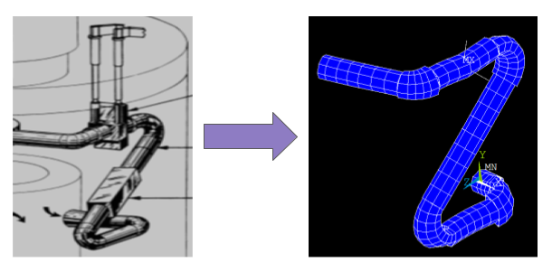
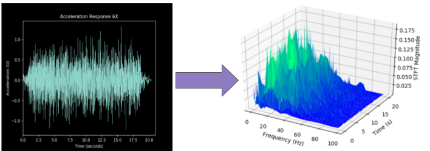
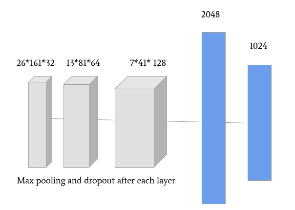
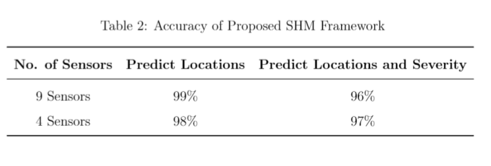

During my internship at the Idaho National Laboratory, I worked on using artifical neural networks to detect damage in a piping system.
Digital twin technology allows for increased monitoring and autonomy in reactors such as microreactors. In this project, a finite element model of the simple piping system was created using ANSYS FE software. Seismic loads were applied to the model, and high-fidelity simulations were carried out to acquire sensor data from 9 locacations in the form of acceleration-time-series signals to capture the phenomenon of degradation in nuclear piping equipment systems. The goal of this project was to detect where the pipe is degraded and its degradation level (minor, moderate, severe).
Using the SciPy short-time Fourier transform (STFT) module, the time series data of each direction of each sensor was transformed into a three-dimensional (3D) array with frequency, time, and STFT magnitude as its axis.
Tensorflow and Keras was used to create a convolutional neural network with 3 convoluted layers and 2 dense layers for 2D image classification. The activation function used was reLu and the output activation function was softmax.
After fine tuning hyperparameters, the results show that our convolutional neural network was very good at detecting degradation with 9 sensors. Later when we tried running the model on a reduced number of sensors, the model still ran suprising well. This may mean that with 9 sensors the data is being overfitted. In the future k-fold validation will be implemented for the 9 sensor model.